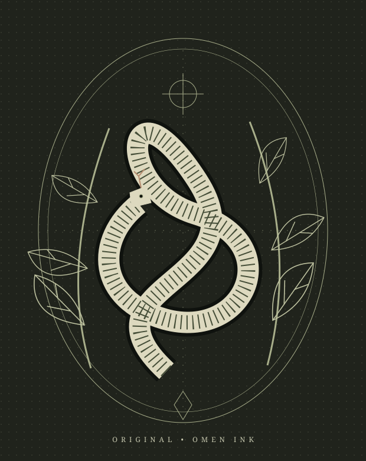

01 — Share Your Idea
References, vibes, placement. It starts with your story.
EST. 2009 — BROOKLYN, NY

Custom tattoo studio. No flash. No shortcuts.
Every piece is a collaboration.
ONE BODY. ONE ORIGINAL.
MAKE IT MEAN SOMETHING.
1,250+Tattoos completed
15 YrsIn the industry
750+Returning clients
8Artists on roster
HOW IT WORKS
References, vibes, placement. It starts with your story.
A custom draft, refined together until it feels right.
Time, precision, and care. Never an assembly line.
Personal care notes to help protect your new piece.
OUR ARTISTS
Japanese & Neo-Traditional
Fine Line & Botanical
Black & Grey Realism
Geometric & Blackwork
RECENT WORK / ORIGINAL ILLUSTRATED STUDIES
12 studies
Every tattoo is an original. Your references become something uniquely yours.
We give your piece the time it deserves. No rush. No assembly line.
You carry this forever. We take that seriously, from first sketch to last line.
FAQ
Occasionally. Artists typically book 2–4 weeks ahead. Contact the studio to confirm availability.
The studio brief lists a $150 minimum and custom pieces around $300–$800+. A personal quote depends on size, complexity and placement.
Absolutely. Bring photos, artwork or sketches. We use them to create an original rather than copy another artist.
Eat beforehand, stay hydrated and wear comfortable clothing. Ask your artist for individual preparation and aftercare guidance.
Fine line, botanical, Japanese, realism, neo-traditional, geometric and blackwork.
Send your reference for an artist assessment; suitability cannot be confirmed by this demonstration.
READY TO GET TATTOOED?
Tell us your idea, timeline and preferred artist. This is a local enquiry preview; nothing is sent and no appointment is reserved.